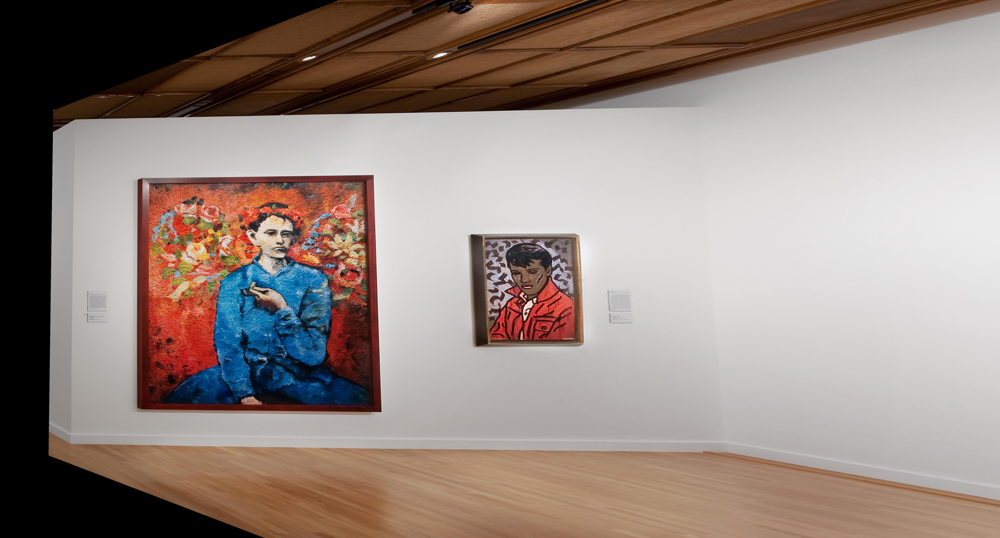
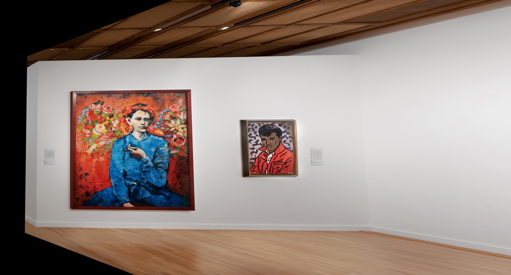

Before warp

After warp + crop


In this project we warp the perspective of various images by using linear algebra techniques to calculate a homography matrix. We start with some photographs and manually choose correspondence points between the two images. With this method, we are able to blend the images together to form a mosaic.
In this part, we warp the persepctive of various photos to a frontal-parallel plane. I chose 4 points that I wanted to be warped into a rectangular shape. I calculate H, the homography matrix by modeling it after the linear equation below:
As you can see, the post-warp photos look like they were taken from eye-level, right in front of the object! (The resulting photo is not perfect because the points were selected by hand.)
Using the techniques explored above, we can extend this concept to create something really cool - a panorama! We are able to take multiple photos of the same setting taken from different perspectives, and blend them together to get a larger view of the scene as a whole.
Here we have two photos taken from slightly different angles. We compute the homography matrix and warp the left image to match the perspective of the right:
Then, we can blend them together. There are various methods one can use. The linear averaging is definitely the simplest method, but you can see the slight seam between the two blended images. It is interesting to note that the more correspondences you select, the sharper the result is, and any blurriness decreases as you got closer to the part of the image where the correspondence points were selected from. This makes sense, as that are of the photo will have the most accurate transformation.
Another example, this time of London. We want to merge these two photos:


We warp and blend to form a mosaic.

Here we merge together two photos of a set of cards:
Again, we warp and blend to form a mosaic.

I learned that something as simple as linear algebra, combined with all the other image manipulation techniques we've learned in class, can create something as cool as a panorama! Now we know how our phones are able to stitch multiple photos together easily to produce a view of a much wider scene than one photo can encompass.
In part B of this project, we implement autostitching, referencing this paper. For this portion, we will work with the building photo from part A as an example.
We use Harris corner detection to detect the most important features in each image. Features that have variation when shifted in any direction (a corner) are marked as interest points.
Here is our two images overlaid with all of the corners detected with the provided Harris function:
As you can see, there are way too many points that our Harris corner detection found! To solve this issue, we implement Adapive Non-Maximal Suppression (ANMS). Through this, we are able to narrow down the number of interest points to a chosen number. The goal is to find interest points spaced out throughout the image since the area of overlap between a pair of images may be small. We want to keep those points with the maximum corner strength, and only those that are a maximum in a neighbourhood of radius r pixels are retained. We start with a suppression radius of 0, and as we increase it, more interest points are added to our final list. If a point has a large suppression radius, it is far from other points with large corner strengths, so we know it is a good local maximum. Here are our two images with ANMS. We've narrowed down the points significantly!
For each of the remaining points, we extract 8x8 descriptor patches from a 40x40 window centered around each point. We achieve this 8x8 patch by downsampling from the larger window and filtering it with a Gaussian filter, then normalizing. We convert each 8x8 patch into a 1x64 vector and find the SSD between every pair of vectors. Only matches where the ratio of the 1-NN dist / 2-NN dist was above a threshold were kept. Below you can see an example of one of these 8x8 descriptors.
In this algorithm, four random pairs of matched points are chosen, and their homography is found. This homography is used to map all the remaining points of one image to the other, then the error for each of the points is calculated. If the error for a match is below a threshold, that pair is considered an inlier. Repeat this process many times to get the set with the largest number of inliers, from which the final homography is calculated. I kept the number of iterations at 1000 and the threshold at 10. Here are my manual and automatically stitched mosaics for three images:
In this part I learned to appreciate all things automatic! So much work is put into making things easy and simple and now I know how difficult it can be by doing it myself.